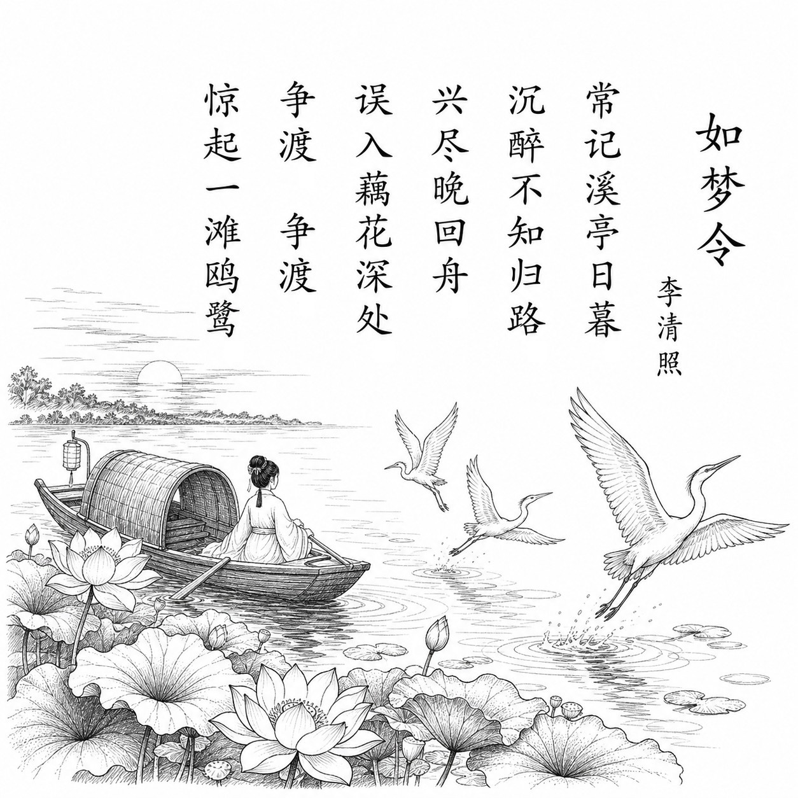

宋 · 李清照
如梦令
常记溪亭日暮
常记溪亭日暮，沉醉不知归路。
兴尽晚回舟，误入藕花深处。
争渡，争渡，惊起一滩鸥鹭。
白话翻译
常常想起在溪边亭子游玩到黄昏，那天喝得尽兴，竟分不清回去的路。
兴致满足后才在暮色中划船回去，却误闯进荷花深处。
赶快划呀，赶快划呀，船桨声惊飞了满滩的水鸟。
为什么写这篇古诗文
“常记”表明这是一首回忆之作。词人回想一次饮酒泛舟、误入荷花丛的青春游赏经历，用几个连续动作保存下少女时代明快、率真的生命气息。不同研究对写作年份和“溪亭”所在看法不一，不能把某一地点当作定论。
关于作者
李清照（1084—约1155），号易安居士，宋代杰出词人。她早年生活优裕，词风清新活泼；靖康之变后南渡，经历丧夫、流离与藏书散失，作品转为深沉苍凉。